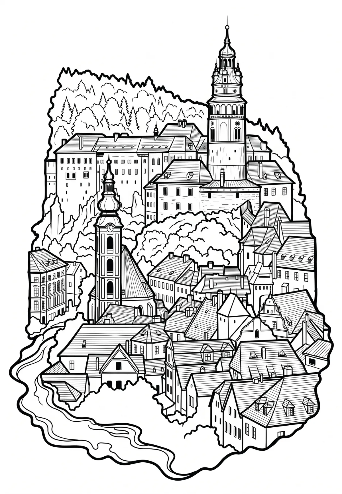

Český Krumlov
Jihočeský kraj · 492 m n. m.

město · #011
Český Krumlov (německy Böhmisch Krumau, popřípadě Krummau nebo Krumau an der Moldau) je město v okrese Český Krumlov v Jihočeském kraji. Nachází se 22 kilometrů jihozápadně od Českých Budějovic. Rozkládá se pod hřebenem Blanského lesa a protéká jím řeka Vltava. Jedná se o turistické a kulturní centrum jižních Čech.